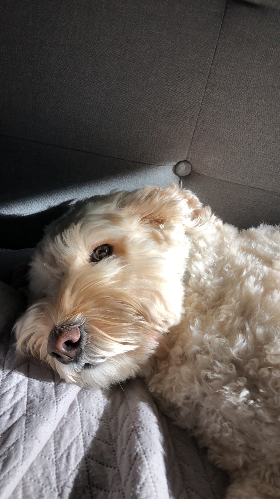

Happy

Happy is an old cat. He spends a lot of his day lounging around, in whatever spot he feels is most comfortable at the time. He’s an indoor cat, but whenever we open the door to let the dogs out, he always comes running out so he can eat grass.
Happy is pretty friendly with one of my dogs, Katie. They don’t interact much, but when they do, it’s usually just friendly sniffs. My other dog, Izzy, however, loves biting at Happy. Happy usually will just run away, but sometime’s he’ll retalliate by giving Izzy a smack! It’s all in good fun though.
Photo Gallery


Likes
- Catnip
- Getting Pet
- Sleeping
Cooky

Cooky is an 11 month old Bernedoodle. He likes to play, run around, go on walks, eat snacks and treats (not his own dog food), get pets and belly rubs, and cuddle. You can usually find him playing with his toys in the living room, chilling in the office room with my dad, or cooling off in the garage.
He's still a baby, but he can get super hyper. Whenever someone rings the doorbell, Cooky gets really excited, barking and dashing towards the front door. He also jumps really high when he's hyper and wags his tail like crazy. Overall, though, he likes to chill and cuddle just as much as he likes to play.
Photo Gallery


Likes
- Dog cookies
- Pets and belly rubs
- Running around the house
Bacon Q Dog

Bacon Q. Dog is a 9yr old labradoodle. He prefers to spend his days lounging among the three different beds/couches that his family has gifted him. He enjoys a walk or two around the neighborhood, as long as he can pretend that he doesn't see any of the other animals to avoid the embarrassment of not wanting to admit he has no wolf-like skills in chasing them.
At night just as the rest of the family is ready to relax, Bacon suddenly wants to release all of his energy. He will place his toys on a mini couch and frantically drag the couch around, giving his toys "a ride." There is also a lot of rolling. Lots and lots of rolling.
Photo Gallery


Likes
- Belly rubs
- Playing tug-of-war
- Sneaking onto the couch
Cheeto (Chicken)

Cheeto is a cat who likes to eat a lot and play a lot. He has an obsession with his grandpa (human) and tries to get outside every single day. If he isn’t causing problems, he is usually hiding in a seven foot tall cat tree and sleeping. Another name for Cheeto is Chicken, because sometimes he sits very scrunched up and ends up looking like a rotisserie chicken. He was nicknamed this by one of his friends, and now he understands it as his own name. He is about six years old and still acts like a younger cat, despite being middle-aged.
Photo Gallery


Likes
- Treats
- Exploring
- His Grandpa
Hazel

Hazel is a year-old yellow Labrador retriever that enjoys long walks and playing catch (in or out of the water). She has a lot of energy, so she gets restless if she does not have enough exercise. Hazel loves meeting new people and seeing old friends. She likes to jump on people, but she is friendly and does not mean any harm.
Hazel will eat anything and everything. Like most Labrador retrievers, she loves food and will eat things that are not actually edible. Some of the things that Hazel has chewed on include hand towels, blankets, Apple Airpods, and Halloween decorations. She also loves to eat human food such as lettuce.
Photo Gallery


Likes
- Hazel likes to swim and catch her stick in the water.
- Hazel likes to go on long walks.
- Hazel likes tough chewing toys.
Leo
Leo is a very hyper labradoodle who enjoys running around and meeting new people. Leo recently turned six back in July, and received two toys for his birthday which he has already destroyed. Leo also enjoys laying around the house, his favorite spots being my parents bedroom and the living room couch. Leo is a big fan of when the mailman comes because that means he will get a treat. At bedtime, Leo waits for both of my parents to get into bed before he goes to bed. He thinks he needs to guard them while they are both still awake.
Photo Gallery


Likes
- Naps
- Food
- Going on walks
Terry

Terry is a playful and spirited dachshund that loves to play fetch with his bone or tennis ball. He loves wandering in forests and finding large sticks to take home. His favorite foods are kibble and peanut butter. Terry will run around frantically when it’s time to eat at home.
My family found Terry at a shelter and decided to adopt it. He was 4 months old and is now 8 years old. Terry knows how to swim, but we don’t tend to go often. Terry got poison ivy once; however, he quickly recovered and has been doing great since.
Photo Gallery


Likes
- Fetch
- Eating
- Belly rubs